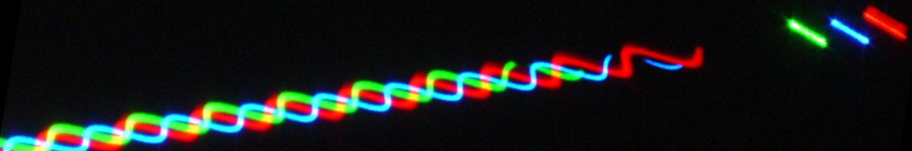
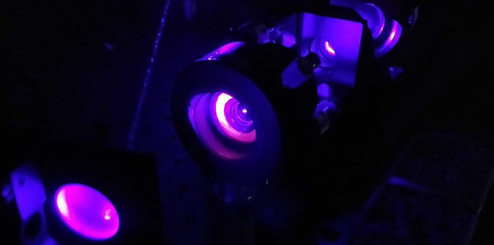
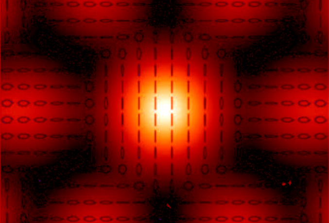
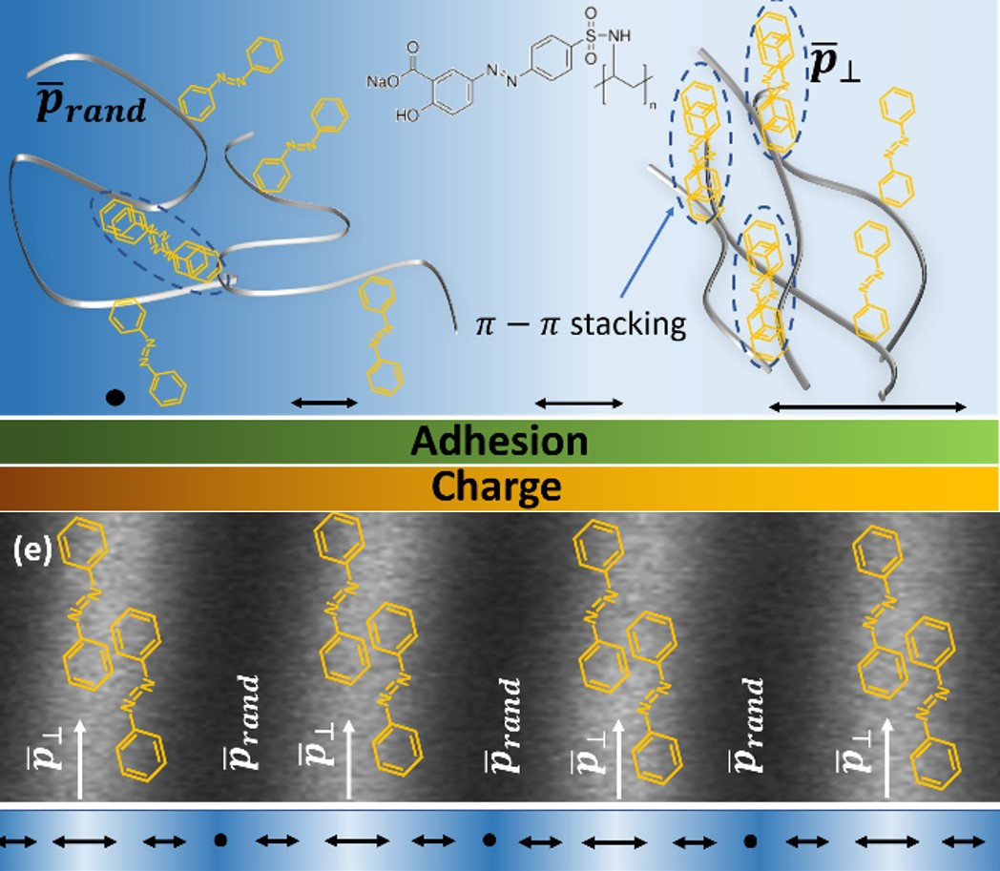

Investigación

Generación y caracterización de estados cuánticos fotónicos

La información cuántica es una nueva ciencia que surgió, en años recientes, de la revisión de conceptos esenciales de la física cuántica con el objetivo de mejorar la transmisión y el procesado de la información. Los fotones surgen como candidatos naturales en distintas aplicaciones ya que son fácilmente transportables y poseen una gran variedad de grados de libertad en los que se puede codificar información.
Desde hace unos años nuestro grupo ha sido pionero en simulaciones de algoritmos cuánticos usando óptica clásica. Hemos simulado clásicamente algunos de los algoritmos más conocidos tales como el algoritmo de búsqueda de Grover, el algoritmo de evaluación de Deutsch, el algoritmo de caminata cuántica al azar y el protocolo de teleportación. Los trabajos realizados por nuestro grupo son pioneros en el área ya que permitieron generar algoritmos reprogramables a tiempo real. Asimismo más recientemente hemos generado y testeado sistemas cuánticos fotónicos de alta dimensión. Estos sistemas representados genéricamente por bits de dimensión d o qudits tienen el potencial de aumentar la capacidad de información de los protocolos de computación y comunicación cuántica además de ser más seguros y robustos frente al ruido, espionaje y fallos del sistema. Dentro de los avances en optoelectrónica las pantallas de cristal líquido se han constituido en una herramienta fundamental para controlar en forma dinámica distintas propiedades de la luz. Estas características hacen que estos dispositivos constituyan un elemento esencial en la manipulación de sistemas cuánticos de alta dimensión.
Generación y detección de estados de polarización

La luz estructurada se refiere a la generación y aplicación de campos de luz personalizados, en los cuales puede modularse tanto la intensidad como la fase o la polarización. Habitualmente, el término luz estructurada se toma como sinónimo de haces con momento angular orbital (OAM), sin embargo, el término luz estructurada va más allá de los haces portadores de OAM y la generación de luz con modulación espacial de los estados de polarización (SoP) se vuelve cada vez más importante. En la mayoría de los experimentos y aplicaciones ópticas, la polarización de la luz es aproximadamente uniforme, la posibilidad de tener una polarización espacialmente variable no fue de particular interés hasta principios de este siglo. Este hecho cambió cuando se encontró que haces polarizados radialmente y azimutalmente exhiben propiedades particulares cuando se hallan muy enfocados. Posteriormente comenzaron a estudiarse distribuciones de polarización no uniforme con potenciales aplicaciones en comunicaciones, pinzas ópticas y entrelazamiento cuántico, entre otras. Un fenómeno particularmente importante, que permite enriquecer la generación de haces estructurados, es que mientras la luz se propaga a través de un medio homogéneo e isotrópico, SoP y OAM se conservan por separado; sin embargo, pueden acoplarse en presencia de un medio anisotrópico y no homogéneo. La modulación óptica producida por las pantallas de cristal líquido sobre la fase y polarización del haz incidente hace que estos dispositivos sean ideales en la ingeniería y detección de haces estructurados. En nuestro laboratorio hemos desarrollado arquitecturas ópticas basadas en estos elementos que permiten por un lado generar haces con distribuciones singulares de fase y polarización. Por el otro, se implementó un polarímetro imagen, es decir que permite medir una distribución espacial de polarizaciones.
Propiedades optomecánicas fotoinducidas en azopolímeros

Un azopolímero es una mezcla física o una funcionalización química de un polímero y moléculas de azobencenos. Ante la exposición a la luz con una longitud de onda particular, las moléculas de azobencenos sufren una transición conformacional reversible (entre los estados cis y trans). Cuando la iluminación está polarizada, la isomerización foto-selectiva conduce a la orientación del momento dipolar de transición de las moléculas perpendiculares a la polarización de la luz. Este mismo efecto, observado como anisotropía inducida ópticamente (birrefringencia y dicroísmo) al iluminar un material en volumen, ha demostrado ser útil para aplicaciones en almacenamiento de información como memorias ópticas reversible. El proceso de fotoisomerización que sucede en la nanoescala también es responsable del movimiento molecular a gran escala del polímero cuando el grupo azo está unido químicamente a la cadena polimérica. En este caso, el movimiento colectivo de las moléculas de azopolímero se observa como un transporte de masa macroscópico impulsado por la iluminación, generando un relieve superficial. En particular, se pueden generar estructuras periódicas o redes de relieve superficial (SRG) cuando los azopolímeros son iluminados con figuras de interferencia. Los mecanismos por los cuales ocurre la fotomigración, indudablemente relacionados con los ciclos de isomerización, han sido debatidos y se han intentado explicar en la literatura, con argumentos relacionados con fuerzas debidas a un gradiente de presión, cambios en la plasticidad y viscosidad o la fuerza gradiente del campo eléctrico óptico. Pese a la cantidad de estudios con los que se cuenta al día de la fecha, aún no se ha establecido un consenso para explicar el fenómeno y por lo tanto continúa existiendo un gran interés en el estudio y desarrollo de materiales con azobencenos.
La posibilidad de fotoinducir efectos tan diversos da lugar al estudio de sistemas materiales con azobencenos para diversas aplicaciones que incluyen almacenamiento y procesado óptico de la información, óptica difractiva y fotomecánica.
En particular, en el laboratorio desarrollamos las siguientes líneas:
- Exploramos las propiedades de los azopolímeros a través del desarrollo de técnicas de microscopia innovadoras.
- Desarrollamos materiales compuestos para mejorar las propiedades de los azopolímeros en vistas de sus aplicaciones como memorias ópticas, actuadores de movimiento o medios para litografía.
- Desarrollamos la técnica de litografía multidimensional empleando azopolímeros.
Manipulación de objetos mesoscópicos utilizando trampas ópticas
En construcción
Proyectos de tesis y Laboratorio 6 y 7
Oferta de temas
Colaboraciones
- Grupo de Información Cuántica y Sistemas Cuánticos de Muchos Cuerpos, Departamento de Física, Instituto de Física La Plata, Facultad de Ciencias Exactas, Universidad Nacional de La Plata.
- Grupo de Óptica, Departamento de Física, Facultad de Ciencias, Universidad Autónoma de Barcelona (Barcelona, España).
- Laboratorio de Polímeros y Materiales Compuestos, Departamento de Física, Facultad de Ciencias Exactas y Naturales, Universidad de Buenos Aires.
- Laboratorio de Bajas Temperaturas, Departamento de Física, Facultad de Ciencias Exactas y Naturales, Universidad de Buenos Aires.
- Advanced Beam Laboratory, Electrical and Computing Engineering, Colorado State University (Colorado, Estados Unidos).